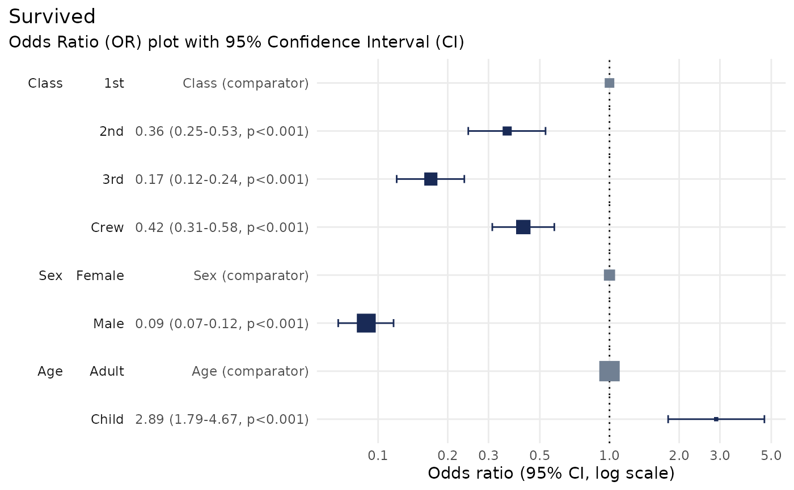

Produces an Odds Ratio plot to visualise the results of a logistic regression analysis.
Usage
plot_or(
glm_model_results,
conf_level = 0.95,
confint_fast_estimate = FALSE,
assumption_checks = TRUE
)Arguments
- glm_model_results
Results from a binomial Generalised Linear Model (GLM), as produced by
stats::glm().- conf_level
Numeric value between 0.001 and 0.999 (default = 0.95) specifying the confidence level for the confidence interval.
- confint_fast_estimate
Boolean (default =
FALSE) indicating whether to use a faster estimate of the confidence interval. Note: this assumes normally distributed data, which may not be suitable for your data.- assumption_checks
Boolean (default =
TRUE) indicating whether to conduct checks to ensure that the assumptions of logistic regression are met.
Value
The function returns an object of class gg and ggplot, which can be
customised and extended using various ggplot2 functions.
See also
See vignette('using_plotor', package = 'plotor') for more details on usage.
More details and examples can be found on the website: https://craig-parylo.github.io/plotor/index.html
Examples
# Load required libraries
library(plotor)
library(datasets)
library(dplyr)
#>
#> Attaching package: ‘dplyr’
#> The following objects are masked from ‘package:stats’:
#>
#> filter, lag
#> The following objects are masked from ‘package:base’:
#>
#> intersect, setdiff, setequal, union
library(ggplot2)
library(stats)
library(forcats)
library(tidyr)
# Load the Titanic dataset
df <- datasets::Titanic |>
as_tibble() |>
# convert aggregated counts to individual observations
filter(n > 0) |>
uncount(weights = n) |>
# convert character variables to factors
mutate(across(where(is.character), as.factor))
# Perform logistic regression using `glm`
lr <- glm(
data = df,
family = 'binomial',
formula = Survived ~ Class + Sex + Age
)
# Produce the Odds Ratio plot
plot_or(lr)
